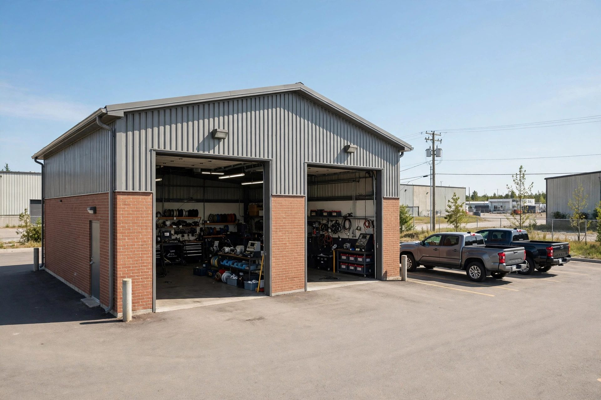
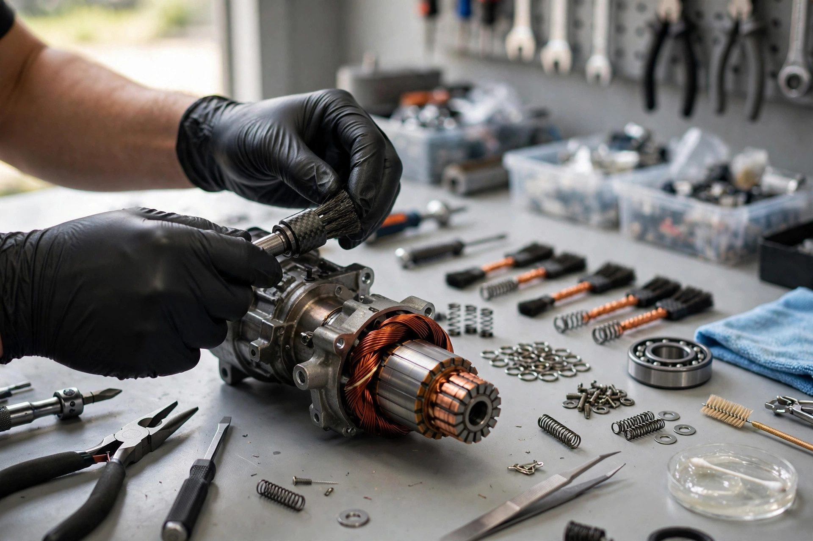
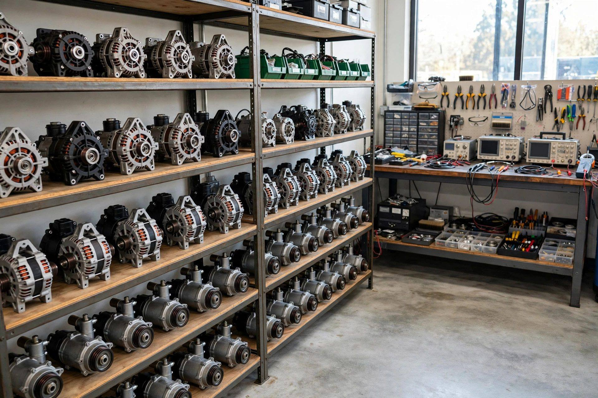
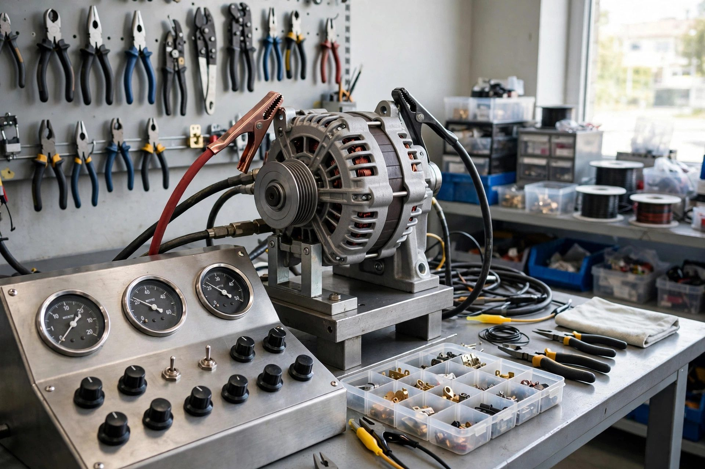

Reconstruction de démarreurs
On démonte, nettoie et reconstruit votre démarreur avec des pièces de qualité — au lieu de le remplacer à gros prix.

Rimouski, Québec · Spécialistes depuis 1990
Reconstruction de démarreurs et d'alternateurs depuis 1990 — pour vos autos, camions et machinerie. Une seule spécialité, maîtrisée à fond.
Ce que nous faisons
On démonte, nettoie et reconstruit votre démarreur avec des pièces de qualité — au lieu de le remplacer à gros prix.
Diodes, régulateurs, roulements et balais — votre alternateur revient comme neuf, à une fraction du prix.
On vérifie si le problème vient du démarreur, de l'alternateur ou de la batterie — avant de toucher à quoi que ce soit.
Chaque unité reconstruite est testée avant d'être remise — vous repartez avec une pièce qui fonctionne.
Démarreurs et alternateurs reconditionnés disponibles à l'achat — passez nous voir ou appelez pour vérifier la disponibilité.
Autos, VUS, camions et machinerie — peu importe la marque, on s'occupe de votre démarreur ou alternateur.

Pourquoi nous choisir
Depuis 1990, on ne fait qu'une chose : redonner vie aux démarreurs et aux alternateurs. Pas de concessionnaire, pas de prix gonflé — juste un atelier spécialisé qui connaît son affaire.
L'atelier en action


Venez nous voir
Bon à savoir
Oui — apportez-nous votre unité et on la reconstruit avec des pièces de qualité. Appelez-nous pour les délais.
On diagnostique votre système de charge avant tout — vous payez seulement pour la réparation nécessaire.
Oui — autos, VUS, camions et machinerie de toutes marques.
Lundi au vendredi de 8 h à 17 h.
Appelez-nous au (418) 723-2992 pendant nos heures d'ouverture — on vous répond rapidement.
Venez nous voir